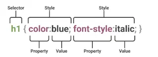

انتخابگرها
برای تعین سبک و سیاق نمایش یک شی اول باید آن را انتخاب کنیم:

در شکل فوق h1 های صفحه انتخاب شده اند و برای آنها به صورت یکجا خاصیت های فوق تنظیم شده.
بعد از select کردن باید property را مشخص کرد و به آن Value داد. به روش های مختلفی می توانیم شی و یا رویداد مورد نظر خود را انتخاب کنیم.
ساده
element Selector
خاصیت های داخل آن روی کل عناصر سایت اعمال میشود:
p {
text-align: center;
color: red;
}id Selector
انتخابگر شناسه CSS بر اساس مقدار ویژگی id عنصر، آن را انتخاب میکند. برای اینکه عنصر انتخاب شود، ویژگی id آن باید دقیقاً با مقداری که در انتخابگر داده شده است، مطابقت داشته باشد.
#para1 {
text-align: center;
color: red;
}ID نباید حاوی space باشد و نباید با عدد شروع شود.
class Selector
خاصیت های داخل آن برای یک کلاس اعمال میشود
.center {
text-align: center;
color: red;
}همچنین می توان به روش زیر تگ هایی که کلاس خاصی دارند انتخاب کرد:
p.container {
Color: black;
}Attribute selector می توان عناصری که خاصیت مشخصی دارند نیز انتخاب کرد:
a[target="_blank"] {
background-color: yellow;
}این کد هایپرلینک هایی که در پنجره جدید باز می شوند انتخاب خواهد کرد. همچنین اگر آیتم هایی مثل فلش معنی خاصی در سایت دارند می توان به کمک خاصیت زیر برای RTL ها کارکرد آنها را تغییر داد:
html[dir="rtl"] .arrow-back {
transform: scaleX(-1); /* افقی آینه میشود */
}کد زیر المنت هایی که خاصیت title آنها حاوی کلمه flower است را انتخاب خواهد کرد:
<style>
[title~="flower"] {
border: 1px solid yellow;
}
</style>
<a href="https://example.com" title="see flower details">
مشاهده مستندات
</a>کد زیر همین کار را با عناصری که کلمه اول کلاس آنها top آنها است خواهد کرد:
<style>
[class|="top"] {
background: yellow;
}
</style>
<div class="top-sub lesson-item" style="background: yellow;">
<span>📌 ۱.۱ - آشنایی با مفاهیم پایه</span>
</div>اگر کلاس عنصری topcontent باشد انتخاب نخواهد شد و باید از کد زیر استفاده کنیم تا انتخاب شود:
[class^="top"] {
background: yellow;
}کد زیر عناصری که نام کلاس آنها به test ختم شده انتخاب خواهد کرد.
[class$="test"] {
background: yellow;
}کد زیر عناصری که نام کلاس آنها در هر کجایش حاوی te است انتخاب خواهد کرد.
[class*="te"] {
background: yellow;
}| انتخابگر | معنی | مثال | توضیح |
|---|---|---|---|
| وجود دارد | [title] | المانهایی که ویژگی title را دارند (هر مقداری) |
|
| = | دقیقاً برابر | [type=“text”] | مقدار دقیقاً برابر با |
| ~= | شامل کلمه | [class~=“btn”] | مقدار شامل کلمه “btn” باشد (با فاصله جدا شده) |
| = | شروع با value- | [class | |
| ^= | شروع با | [class^=“top”] | مقدار با “top” شروع شود (هر چیزی) |
| = | خاتمه با | [href=“.pdf”] | مقدار با “.pdf” تمام شود |
||
| *= | شامل | [class*=“btn”] | مقدار شامل “btn” در هر جایی باشد |
| [attribute=“value” i] | case-insensitive | [type=“text” i] | تطبیق بدون توجه به بزرگ/کوچکی حروف |
یکی از کاربردهای انتخاب با خاصیت فرم دهی به برخی عناصر بدون ایجاد نام و مشخصه ای دیگر برای آنهاست:
input[type="text"] {
width: 150px;
display: block;
margin-bottom: 10px;
background-color: yellow;
}
input[type="button"] {
width: 120px;
margin-left: 35px;
display: block;
}Universal Selector
همه اجزای داخل html را انتخاب میکند.
* {
text-align: center;
color: blue;
}نکته مهم: اگر یکی از این خواص هم در id ستاره وجود داشته باشد هم در id مستقیم آن شی اولویت با id داخل شی خواهد بود. مثلا اگر در فایل css داشته باشیم :
<style>
* {
margin: 0;
}
#container {
margin: 40px auto;
}
</style>
<div id="container">این div با فاصله 40 پیکسل از بالا پایین تفسیر خواهد شد هر چند که درuniversal تاکید شده margin باید صفر باشد.
Group selector
برای انتخاب گروهی از عناصر و اعمال تغییرات روی همه آنها و خلاصه تر شدن کد
h1,h2,p {
text-align: center;
color: red;
}ترکیبی1
از طریق تشریح روابط بین المنت ها آنها را انتخاب می کند.
در CSS، کامبیناتورها (Combinators) نمادهایی هستند که رابطه بین دو یا چند انتخابگر را مشخص میکنند.
فرزند2
ترکیبکنندهی فرزند - که معمولاً با یک کاراکتر فاصله (” “) نمایش داده میشود - دو انتخابگر را به گونهای ترکیب میکند که عناصر منطبق با انتخابگر دوم در صورتی انتخاب میشوند که دارای یک عنصر جد (والد، والدِ والد، والدِ والدِ والد و غیره) منطبق با انتخابگر اول باشند. انتخابگرهایی که از یک ترکیبکنندهی فرزند استفاده میکنند، انتخابگرهای فرزند نامیده میشوند.
selector1 selector2 {
/* property declarations */
}مثلا:
<style>
li {
list-style-type: disc;
}
li li {
list-style-type: circle;
}
</style>
<div>
<ul>
<li>
<div>Item 1</div>
<ul>
<li>Subitem A</li>
<li>Subitem B</li>
</ul>
</li>
<li>
<div>Item 2</div>
<ul>
<li>Subitem A</li>
<li>Subitem B</li>
</ul>
</li>
</ul>
</div>-
Item 1
- Subitem A
- Subitem B
-
Item 2
- Subitem A
- Subitem B
tag selector با عنوان li همه list ها را انتخاب می کند و list-style آنها را disk می کند. انتخاب گر بعدی همه li هایی که داخل یک li قرار گرفته اند انتخاب می کند و وزن بیشتری دارد و list-style آنها را circle می کند. مثال دیگر: می توان تگ های پیش فرض مثل img را سفارشی کرد:
body img {
height: 300px;
width: 1000px;
border-radius: 4px;
}فرزند مستقیم3
کد زیر تگی که در تگ دیگر قرار گرفته انتخاب خواهد کرد:
div>p {
background-color: yellow;
}یعنی تگ های p که داخل یک div قرار گرفته اند. فرض کنیم ساختار کد ما اینچنین باشد:
<p>paragraph 1</p>
<div>
<p>paragraph 2</p>
</div>
<p>paragraph 3</p>
<p>paragraph 4</p>
<div>
<p>paragraph 5</p>
<p>paragraph 6</p>
</div>
<p>tparagraph 7</p>
<p>tparagraph 8</p>آنگاه:
paragraph 1
paragraph 2
paragraph 3
paragraph 4
paragraph 5
paragraph 6
tparagraph 7
tparagraph 8
پاراگراف های 2 و 5 و 6که داخل یک بلاک div قرار گرفته اند انتخاب خواهند شد.
همسایه مجاور4
یا sibling (+) بین دو انتخابگر قرار می گیرد و در صورتی که هر سه شرط زیر جاری باشد انتخابگر دوم را انتخاب میکند:
- المنت دوم منطبق شده باشد
- المنت دوم دقیقا بعد از المنت اول آمده باشد
- هر دو فرزندان یک والد باشند
/* The white space around the + combinator is optional but recommended. */
former_element + target_element { style properties }
مثلا:
div+p {
background-color: yellow;
}تگ های p که بلافاصله بعد از یک div قرار گرفته اند انتخاب خواهند شد. اگر کد ما این باشد:
<p>paragraph 1</p>
<div></div>
<p>paragraph 2</p>
<p>paragraph 3</p>
<div>
<p>paragraph 4</p>
<p>paragraph 5</p>
</div>
<p>tparagraph 6</p>
<p>tparagraph 7</p>paragraph 1
paragraph 2
paragraph 3
paragraph 4
paragraph 5
tparagraph 6
tparagraph 7
چوت فقط پاراگراف 2 و 6 بلافاصله بعد از یک بلاک div قرار گرفته اند. پاراگراف 4 درون div قرار گرفته نه بلافاصله بعد از آن.
تمرین:
<style>
li:first-of-type+li {
color: red;
font-weight: bold;
}
</style>
<div>
<ul>
<li>One</li>
<li>Two!</li>
<li>Three</li>
</ul>
</div>- One
- Two!
- Three
li هایی را انتخاب می کند که بلافاصله بعد از اولین آیتم یک لیست قرار گرفتهاند
به کمک تابع has می توان previous sibling selector را شبیه سازی کرد:
<style>
li:has(+ li:last-of-type) {
color: red;
font-weight: bold;
}
</style>
<ul>
<li>One</li>
<li>Two</li>
<li>Three!</li>
<li>Four</li>
</ul>- One
- Two
- Three!
- Four
این کد خود تگ li یکی به آخر لیست ها را انتخاب خواهد کرد.
همسایههای بعدی 5
ترکیبکنندهی همخواه بعدی (~، یک علامت مد یا tilde) دو انتخابگر را از هم جدا میکند و تمام نمونههای عنصر دوم را که پس از عنصر اول میآیند (نه لزوماً بلافاصله) و عنصر والد یکسانی دارند، تطبیق میدهد.
/* The white space around the ~ combinator is optional but recommended. */
former_element ~ target_element { style properties }
مثال:
<style>
div~p {
background-color: yellow;
}
</style>
<div>
<div>
<p>paragraph 1</p>
<p>paragraph 2</p>
<main>
<p>paragraph 3</p>
</main>
<div></div>
<p>paragraph 4</p>
<p>paragraph 5</p>
</div>
</div>paragraph 1
paragraph 2
paragraph 3
paragraph 4
paragraph 5
یعنی: همه عناصر <p> که بعد از یک عنصر <div> قرار میگیرند و با آن در یک سطح (همخواه) هستند، انتخاب میشوند. فقط پاراگراف 4 و 5 بعد از یک div قرار گرفتهاند و هم سطح آن هستند.
شبه کلاس
شبه کلاس های برای توصیف وضعیت خاصی از یک المان استفاده می شوند.مثلا وقتی موس از روی یک شی عبور می کند یا وقتی روی آن کلیک می کند و … . شبه کلاس ها کلاس هایی هستند که روی قسمتی از یک یا چند عنصر اعمال می شوند و با علامت : متمایز میشوند.
hover
وقتی کاربر با وسیلهی اشاره گری مثل mouse روی المنت عبور کرد اجرا میشود. مثلا:
<style>
p:hover {
background-color: yellow;
color: #000;
text-decoration: none;
}
</style>
<p>ماوس رو بیار روی من</p>ماوس رو بیار روی من
این رویداد فقط در دستگاههای دارای ماوس کامل کار میکند مگر اینکه مرورگر touch را شبیهسازی کند. به همین دلیل معمولا با کد زیر برای دستگاههای لمسی کد جایگزین مینویسند:
@media (hover: none){}می توان شبه کلاس ها و کلاس ها را با هم ترکیب کرد:
<style>
a.highlight:hover {
color: #ff0000;
}
tr:hover td {
background-color: lime;
}
table {
border-collapse: collapse;
}
td,th {
border: 1px solid black;
text-align: center;
}
</style>
<table>
<thead>
<tr>
<th>نام</th>
<th>شهر</th>
<th>سن</th>
</tr>
</thead>
<tbody>
<tr tabindex="0">
<td>علی محمدی</td>
<td>تهران</td>
<td>۲۸</td>
</tr>
<tr tabindex="0">
<td>سارا حسینی</td>
<td>اصفهان</td>
<td>۳۴</td>
</tr>
<tr tabindex="0">
<td>رضا کریمی</td>
<td>شیراز</td>
<td>۲۲</td>
</tr>
<tr tabindex="0">
<td>مریم احمدی</td>
<td>مشهد</td>
<td>۴۱</td>
</tr>
</tbody>
</table>| نام | شهر | سن |
|---|---|---|
| علی محمدی | تهران | ۲۸ |
| سارا حسینی | اصفهان | ۳۴ |
| رضا کریمی | شیراز | ۲۲ |
| مریم احمدی | مشهد | ۴۱ |
کد زیر زیر منوها را هنگام عبور موس از منوی دارای زیر منو، نمایش میدهد.
<style>
nav ul li {
display: inline;
list-style: none;
padding: 0;
margin: 0;
}
nav ul li {
position: relative;
padding: 10px 15px;
}
li.has-dropdown:hover .dropdown {
display: flex;
flex-direction: column;
}
.dropdown {
display: none;
position: absolute;
left: 0;
background-color: white;
border: 1px solid black;
z-index:1;
}
.dropdown li {
padding: 8px 15px;
}
</style>
<nav>
<div>
<span>❤</span>
<span>brand</span>
</div>
<ul>
<li>منو1</li>
<li>منو2</li>
<li>منو3</li>
<li class="has-dropdown">منو4
<span>⌄</span>
<ul class="dropdown">
<li>زیرمنو1</li>
<li>زیرمنو2</li>
<li>زیرمنو3</li>
<li>زیرمنو4</li>
</ul>
</li>
<li>منو5</li>
<li>منو6</li>
</ul>
</nav>link-visited
برای المنتهای a و area که دارای خاصیت href هستند کارایی دارند. link بیانگر لینک های کلیک نشده و visited بیانگر لینک های کلیک شده است. به منظور حفظ حریم خصوصی style هایی که می توان در لینک ها ویرایش کرد محدودیت دارند. مرورگرهای مدرن (Chrome، Firefox، Safari و …) برای جلوگیری از هک شدن و شناسایی تاریخچه مرور کاربر، استایلدهی به :visited را به شدت محدود کردهاند مثلا خاصیت background-color نمیتواند هر مقداری بگیرد. گاهی نفوذگران با سو استفاده از Css سعی در استخراج سوابق مرور کاربر می کنند.
/* unvisited link */
a:link {
color: #FF0000;
}
/* visited link */
a:visited {
color: #00FF00;
}
/* mouse over link */
a:hover {
color: #FF00FF;
}
/* selected link */
a:active {
color: #0000FF;
}در حوزه رویدادها شبه کلاس link برای لینک هایی که هنوز کلیک نشده اند و شبه کلاس visited برای لینک هایی که بازدید شده اند و active برای لحظه کلیک نیز قابل استفاده هستند.
در صورتی که hover برای لینکی تعریف شده باشد اولویت بالاتری نسبت به انتخابگرهای مرتبط با link خواهد داشت.
first-child
اولین فرزند را در بین گروهی از عناصر خواهر و برادر نشان میدهد.
p:first-child {
color: blue;
}کد فوق باعث انتخاب p هایی که اولین فرزند سایر المنت ها مثل html یا div هستند خواهد شد. دقت کنید خود p باید اولین باشد مثلا در کد زیر:
<style>
div:first-child img {
border: solid;
}
</style>
<body>
<div>
<img src="./img1.jpg" alt="">
<img src="./img2.jpg" alt="">
</div>
<div id="div2">
<img src="./img3.jpg" alt="">
</div>
</body>img1و img2 انتخاب خواهند شد چون #div2 اولین خواهر برادر sibling خود نیست. یا در کد زیر paragraph 1 انتخاب نخواهد شد چون فرزند اول والد یک h1 است پس هیچ یک از p ها فرزند اول والد خود نیستند.
<style>
p:first-child {
font-style: oblique;
}
</style>
<div class="container">
<h1>📝 آزمون سهسوالی</h1>
<p>paragraph 1</p>
<p>TEST</p>
<p>TEST</p>
</div>در کد زیر list item 1 انتخاب خواهد شد:
<style>
li:first-child {
border: 2px solid orange;
}
</style>
<ul>
<li>list item 1</li>
<li>list item 2</li>
<li>list item 3</li>
</ul>با کد زیر اولین المنت i در همه p ها انتخاب خواهد شد.همچنین می توان شبه کلاس های المنت خاصی را انتخاب کرد:
p i:first-child {
color: blue;
}nth-child
با selector ی به نام nth-child می توان مشخصه خاصی برای انتخاب تعیین کرد. مثلا در جداول با آن می توان سطرهای فرد و زوج را متمایز کرد تا جدول خواناتر شود:
td:last-child {
border-radius: 2px;
}
tr:nth-child(even) {
background: gainsboro;
}:nth-child() از اول میشمارد، :nth-last-child() از آخر میشمارد. پس
tr:nth-last-child(2)یعنی «قبل از آخری».
first-of-type
اولین عنصر از نوع خود (نام تگ) را در میان گروهی از عناصر خواهر و برادر نشان میدهد.
<style>
dd:first-of-type {
border: 2px solid orange;
width: 20%;
}
</style>
<dl>
<dt>Vegetables:</dt>
<dd>1. Tomatoes</dd>
<dd>2. Cucumbers</dd>
<dd>3. Mushrooms</dd>
<dt>Fruits:</dt>
<dd>4. Apples</dd>
<dd>5. Mangos</dd>
<dd>6. Pears</dd>
<dd>7. Oranges</dd>
</dl>- Vegetables:
- 1. Tomatoes
- 2. Cucumbers
- 3. Mushrooms
- Fruits:
- 4. Apples
- 5. Mangos
- 6. Pears
- 7. Oranges
required - optional
با انتخابگر required می توان فیلدهای اجباری را انتخاب کرد و خواصی را به آنها الصاق کرد. در مقابل انتخابگر optional نیز وجود دارد.
<style>
input:optional {
background-color: lightgreen;
}
input:required {
background-color: pink;
border-color: red;
}
.req {
color: red;
}
</style>
<form>
<label for="name">Name: </label><br>
<input id="name" name="name" type="text" /><br>
<label for="email">Email: <span class="req">*</span></label><br>
<input id="email" name="email" type="email" required /><br>
<label for="country">Country: </label><br>
<input id="country" name="country" type="text" />
<p><span class="req">*</span> Required field</p>
</form>valid - invalid
با valid می توان عناصری که مقدار آنها معتبر است انتخاب کرد مثلا در شکل زیر نوع input ایمیل است :
<style>
input:valid {
background-color: lawngreen;
}
input:invalid {
background-color: khaki;
}
</style>
<form>
<label for="email">Email: </label><br>
<input id="email" name="email" type="email" value="test@example.com" />
<p>Input a number between 1 and 10: <input type="number" min="1" max="10" value="10"></p>
</form>اگر سعی کنید در فرم فوق مقادیر با قالب نامعتبر وارد کنید رنگ کادرتغییر خواهد کرد.
root
شبه کلاس دیگری به نام root داریم.این شبه کلاس برای اعمال موارد روی کلاس پایه که در html همان تگ html است استفاده میشود. یکی از کاربردهای آن اعلان متغیرهای سراسری است:
:root {
--main-color: hotpink;
--pane-padding: 5px 42px;
}has
شبه کلاس has وجود شرطی را بررسی میکند:
nav>ul>li:has(> ul) {
color: red;
}کد فوق ul ی که درون ul دیگری است را قرمز می کند.(البته چون رنگ به فرزندان به ارث میرسد همه ul های درون آن ul نیز قرمز خواهند شد)
اگر فرم ورودی عنصر نا معتبری داشته باشد:
form:has(input:invalid) {
border: 2px solid red;
}اگر کارد عکس داشته باشد:
.card:has(img) {
padding: 1rem;
}اگر جدول سطر انتخاب شده داشته باشد:
table:has(tr.selected) {
box-shadow: 0 0 10px #999;
}last-of-type
آخرین عنصر از نوع خود (نام تگ) را در میان گروهی از عناصر خواهر و برادر نشان میدهد.
شبه عناصر
برای فرم دهی به قسمت خاصی از المنت ها استفاده میشود.
p::first-line {
color: #ff0000;
font-variant: small-caps;
}کد فوق خط اول عناصر p را انتخاب خواهد کرد.
p::first-letter {
color: #ff0000;
font-size: xx-large;
}کد بالا نیز حرف اول عناصر p را انتخاب خواهد کرد.همچنین می توان انتخاب را روی کلاس خاصی انجام داد:
p.intro::first-letter {
color: #ff0000;
font-size: 200%;
}first-letter فقط برای عناصر block-level کارایی دارد.
با کد زیر می توان قبل از عنصر خاص آیتمی را اضافه کرد:
p::before {
content: url('./img/ww.png');
height: .5rem;
}با کد زیر همین کار بعد از المنت مشخص شده انجام خواهد شد.
p::after {
content: url(smiley.gif);
}با شبه المنت زیر میشود تغییراتی در li داد:
::marker {
color: red;
font-size: 23px;
}Marker ها در لیست های مرتب و بدون ترتیب استفاده می شوند. همچنین از طریق انتخاب زیر می توان روی عناصری که کاربر انتخاب کرده تغییراتی اعمال کرد:
::selection {
color: red;
background: yellow;
}Select some text on this page
This is a paragraph.
همچنین First-letter :
#samplediv15 p::first-letter {
font-size: 200%;
font-weight: bold;
color: #8A2BE2;
}My name is Donald.
My best friend is Mickey.
We live in Duckburg.
با placeholder Selector می توان عناصر مجهز به این خاصیت را انتخاب کرد:
::placeholder {
color: red;
font-size: 1.2em;
font-style: italic;
opacity: 0.5;
}شبه عنصر backdrop یک جعبه به اندازه viewport است که بلافاصله زیر هر عنصری که در لایه بالایی نمایش داده میشود، رندر میشود. مثلا به کمک آن می توان پس زمینه dialog را قالب بندی کرد:
::backdrop {
background-color: rgb(0, 0, 0, .8);
}وزن یا اولویت 6
یعنی قانونی که تعیین میکند کدام استایل بر دیگری غلبه کند زمانی که چند سلکتور به یک المان اشاره میکنند. این قانون id, class, element نام دارد:
| مثال | id, class, element | وزن |
|---|---|---|
| p { } | 0, 0, 1 | 1 |
| .class { } | 0, 1, 0 | 10 |
| #id { } | 1, 0, 0 | 100 |
| div.class1.class2 { } | 0, 2, 1 | 21 |
| div#id.class { } | 1, 1, 1 | 111 |
| div.class { } | 0, 1, 1 | 11 |
| div p { } | 0, 0, 2 | 2 |
نکات تکمیلی وزن دهی:
| نوع سلکتور | وزن | مثال |
|---|---|---|
| !important | ∞ (بینهایت) | color: red !important; |
| Inline Style | 1000 | style=“color: red;” |
| ID | 100 | #header |
| کلاس، شبهکلاس، ویژگی | 10 | .btn, :hover, [type=“text”] |
| المان (تگ) | 1 | div, p, h1 |
| Universal Selector | 0 | * |
هر چقدر وزن یک selector بیشتر باشد اولویت بالاتری دارد. برای کنترل ساده تر وزن ها به جای حفظ روش بالا چند تکنیک ساده را رعایت می کنیم:
- از
!important فقط در موارد ضروری استفاده کنید (مثل کلاسهای utility در چارچوبهایی نظیر بوت استرپ و Tailwind) - استفاده از کلاسها به جای ID
- افزایش وزن با تکرار کلاس
.btn.btn.btn { background: red;}- استفاده از ویژگیهای خاصتر
[class="btn-primary"] {
background: blue;
}- ترتیب در فایل CSS . اگر وزن ها برابر باشد آخرین مورد اعمال می شود: 7
p { color: red; }
p { color: blue; } تمرین
تمرین اول:
<style>
.foo p~span {
color: blue;
}
.foo p~.foo span {
color: green;
}
</style>
<h1>Dream big</h1>
<span>And yet again this is a red span!</span>
<div class="foo">
<p>Here is another paragraph.</p>
<span>A blue span</span>
<div class="foo">
<span>A green span</span>
</div>
</div>Dream big
And yet again this is a red span!Here is another paragraph.
A blue spanمعنی rule اول: هر spanای که بعد از یک <p> بیاید، به شرطی که هر دو داخل یک عنصر با کلاس .foo باشند. همسطحهای بعدی نه لزوماً بلافاصله بعد، بلکه هرجایی بعد از آن در همان سطح.
معنی rule دوم : هر spanای که داخل یک عنصر با کلاس .foo باشد، و آن .foo بعد از یک <p> آمده باشد، و همه اینها داخل یک .foo والد باشند.
1- <span> اول (بعد از h1) رنگ: پیشفرض مرورگر
دلیل: داخل .foo نیست ، پس هیچکدام از قانونها روی آن اثر نمیکنند.
۲- <span>A blue span</span> - این span:داخل div.foo است. - بعد از <p> در همان سطح قرار دارد.
- قانون اول (.foo p~span) روی آن اعمال میشود → آبی.
- قانون دوم؟ خیر، چون خودش داخل یک .foo دیگر نیست (فقط داخل یک .foo است، ولی خودش .foo نیست).
۳- <span>A green span</span> (داخل div.foo تو در تو) این span: داخل div.foo داخلی است.آن div.foo داخلی بعد از <p> در سطح والد خودش قرار دارد.
قانون دوم (.foo p~.foo span) اعمال میشود → سبز.
چون: .foo والد دارد، یک <p> قبل از .foo داخلی هست، و ما یک span داخل آن .foo داریم.
قانون اول؟ روی این span هم اثر میکند چون شرط .foo p~span را هم دارد (چون باز هم بعد از <p> است و داخل .foo است).
اما قانون دوم اولویت (خاصیت) بیشتری دارد چون انتخابگرش دقیقتر است (سه کلاس/تگ در برابر دو تا) → سبز override میکند.
تمرین دوم بیایید ترجمه کلامی انتخاب گر زیر را بنویسیم:
#nav-toggle:checked~.navbar .nav-links {
transform: translateY(0);
opacity: 1;
}“وقتی عنصری با id برابر nav-toggle در حالت تیکخورده (checked) قرار دارد، تمام المانهای دارای کلاس nav-links که درون المانهای دارای کلاس navbar (که همترازهای بعدی آن چکباکس هستند) قرار دارند، استایل داده شوند.”
کاربرد عملی کد فوق در تغییر حالت منوی های سایت به حالت همبرگری است وقتی سایز صفحه از یک مقدار کوچک تر میشود.